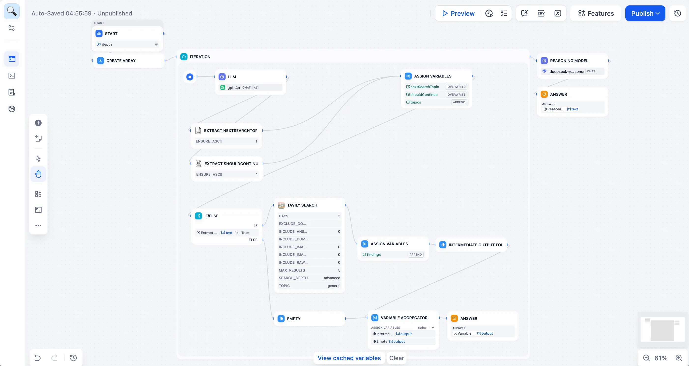

Dify 技术生态
Marketplace
技术伙伴合作方案
从发布一个插件，到让用户用它完成一项工作。
Dify 技术生态
从发布一个插件，到让用户用它完成一项工作。
Marketplace
开发者可以安装模型、工具和数据源插件。伙伴可以把插件配进可导入的模板，附上配置步骤和示例输入，让用户跑通第一遍。

Workflow
图中的工作流用模型生成检索主题，按条件调用 Tavily Search，把结果写入变量，再由推理模型整理答案。用户可以沿节点查看每一步。

知识流水线 · RAG
以资料问答为例，流水线从数据源读取内容，将其处理后写入知识库。回答问题时，工作流检索相关片段，交给模型作为回答依据。

合作方案 · 试行框架
适合已通过上架审核、需要验证需求的产品。准备演示，记录基线与用户反馈，第 30 天复盘。
适合已有真实用户的集成。每轮评审一个模板，共做一篇内容或一场技术活动，再复盘转化。
围绕共同客户需求共建一个旗舰方案。双方指定负责人，完成客户验证、联合发布和成果跟踪。
C 是产品探索阶段。A、B 的伙伴身份须经双方确认，产品上架、集成认证和运营推荐各自审核。
合作示例 · B 档增长包
例如，为知识问答模板提供插件、样本文档、设置教程和维护联系人，让另一位开发者能够复现答案。
共同评审模板，再选择发布一篇教程或举办一场技术演示。提前确认可用人力、渠道、日期及各自负责人。
检查用户在哪一步停下，改进配置或教程，并约定下一轮验证的问题。
成效复核
约定成功事件，例如第一次用模板检索到样本文档。记录基线、数据来源和观察周期。
分别记录安装、首次成功和持续使用。按工作区去重，排除内部测试、机器人和异常流量。
推荐位按批次申请。30 天验证期与实际曝光天数分别记录，位置和起止日期以确认排期为准。
发起合作
提供产品或插件链接，说明谁会使用它、需要完成什么工作。
附模板或工作流、样例输入与预期输出，以及维护联系人。
带上已有用户反馈。双方核对质量、安全和维护条件，再确定交付物、资源及复盘日期。